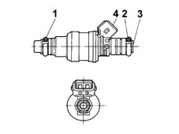

1058AB Check methane injector coil
- Path
- Test > 10 ENGINE UNIT > 1058 GAS CIRCUIT > 1058AB Check methane injector coil
- Kind
- test / check procedure
- Applies to
- engines: 1.6 16v; all production periods; only with equipment: BIPOWER
- Interactive page
- https://sloeber94.github.io/elrnDB-fMltpl/en/#/186003419
Applies to: engines: 1.6 16v; all production periods; only with equipment: BIPOWER
- Disconnect the electrical connection of the injector and check the winding resistance is between 3.7 and 5.5 Ohm at 20 °C.
1.Sealing ring
2.Sealing ring
3.Methane fuel supply
4. Connector
